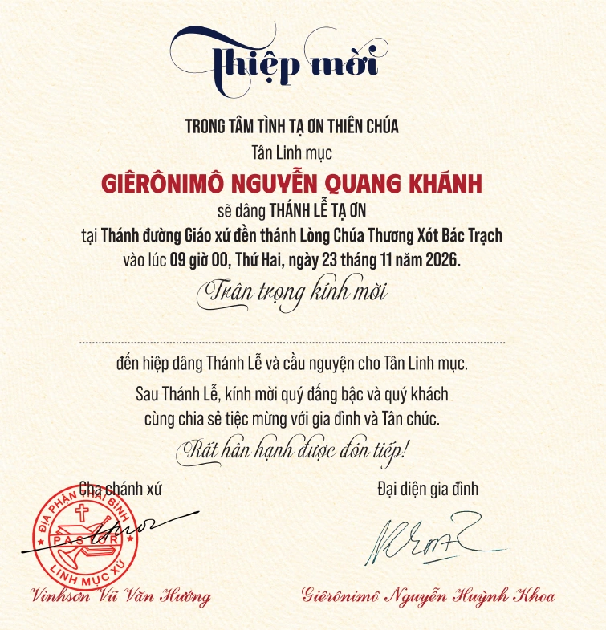
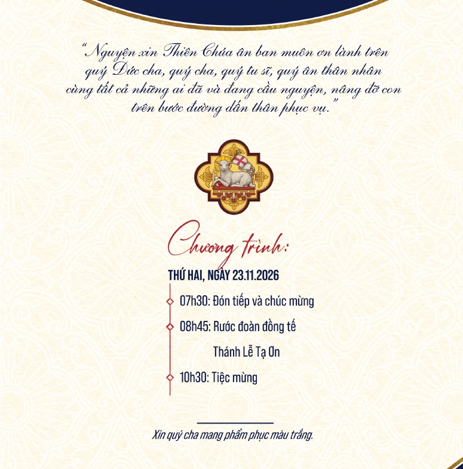
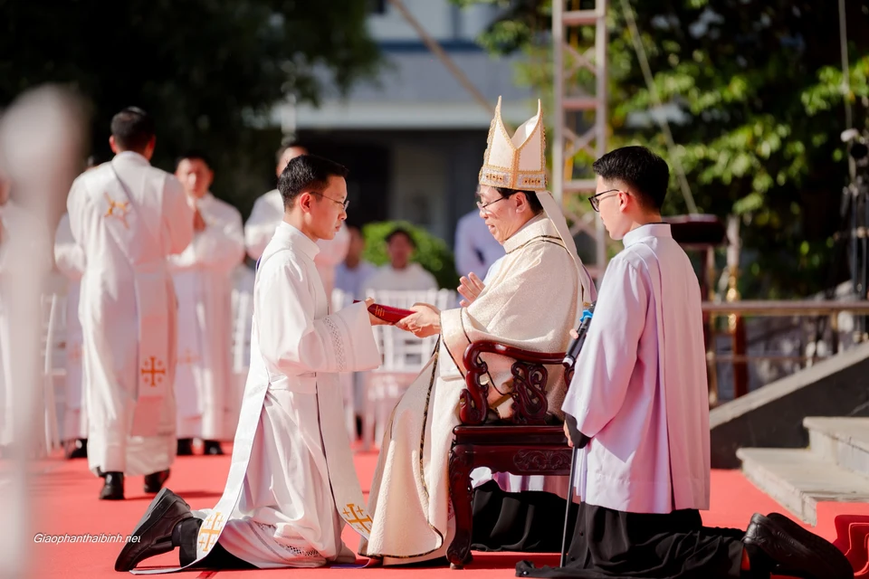
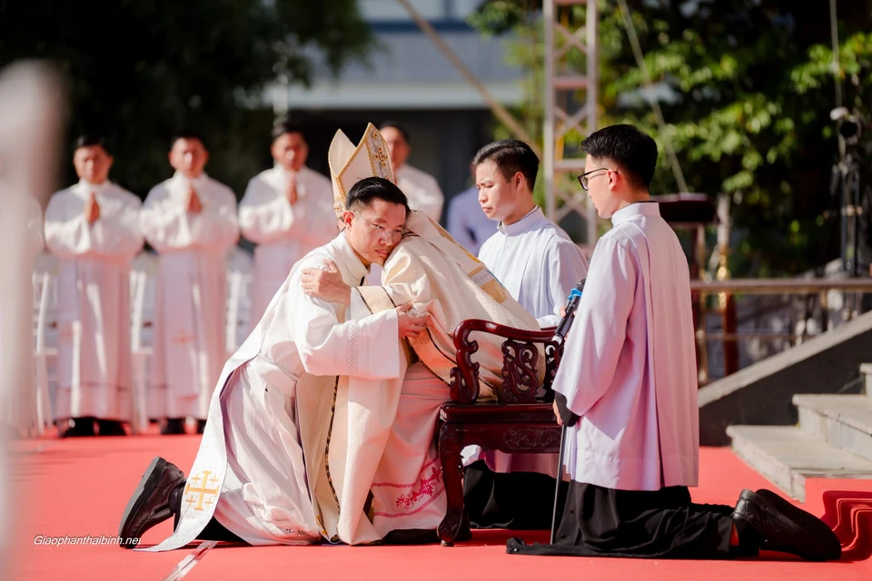
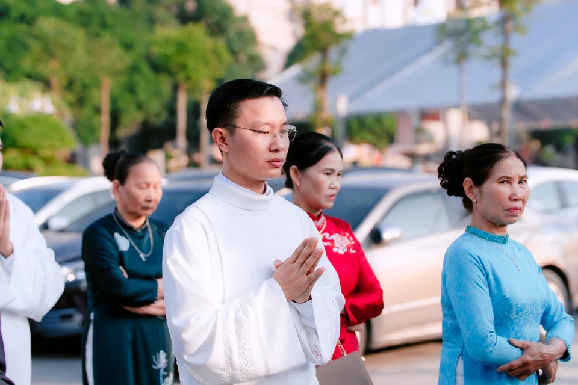

23.11 · 09h00
Thánh lễ Tạ ơn
Thánh đường Giáo xứ đền thánh Lòng Chúa Thương Xót Bác Trạch
Mở Google MapsĐền Thánh Bác Trạch · 23.11.2026
Thiệp mời Thánh lễ Tạ ơn
Đền Thánh Bác Trạch
Mừng Tân Linh mục
Giêrônimô
Nguyễn Quang Khánh
Thứ Hai · 23 tháng 11 năm 2026
Thông tin ngày lễ
Đền Thánh Bác Trạch
Xin quý cha mang phẩm phục màu trắng.
Hồng ân Thiên Chúa
08h00 · Thứ Bảy, 21.11.2026
Tòa Giám Mục Thái Bình

Trân trọng kính mời
09h00 · Thứ Hai, 23.11.2026
Đền Thánh Bác Trạch

Quý kháchLưu lại ngày
| T2 | T3 | T4 | T5 | T6 | T7 | CN |
|---|---|---|---|---|---|---|
| 1 | ||||||
| 2 | 3 | 4 | 5 | 6 | 7 | 8 |
| 9 | 10 | 11 | 12 | 13 | 14 | 15 |
| 16 | 17 | 18 | 19 | 20 | 21 | 22 |
| 23 | 24 | 25 | 26 | 27 | 28 | 29 |
| 30 |
21.11 · Lễ Truyền chức
23.11 · Lễ Tạ ơn
Thứ Hai · 23.11.2026
Xin quý cha mang phẩm phục màu trắng.

Địa điểm
23.11 · 09h00
Thánh đường Giáo xứ đền thánh Lòng Chúa Thương Xót Bác Trạch
Mở Google Maps21.11 · 08h00
Tòa Giám Mục Thái Bình
06 Trần Hưng Đạo, P. Thái Bình, T. Hưng Yên
Xác nhận tham dự
Xin quý khách cho gia đình biết mình có thể tham dự Thánh lễ Tạ ơn hay không để việc đón tiếp được chu đáo.
Mở biểu mẫu hồi đápKỷ niệm lãnh chức Phó tế · 2025
Nhìn lại ngày thầy Giêrônimô Nguyễn Quang Khánh lãnh chức Phó tế, một dấu mốc trên hành trình dấn thân phục vụ.



Dấu nguồn trên ảnh nghi thức được giữ nguyên.
Thiệp gốc